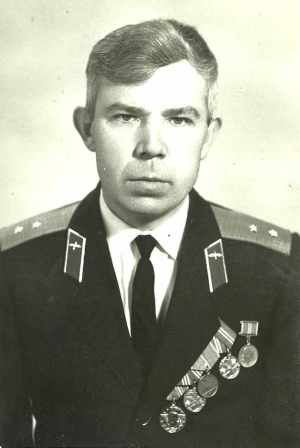
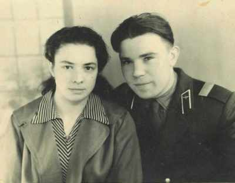
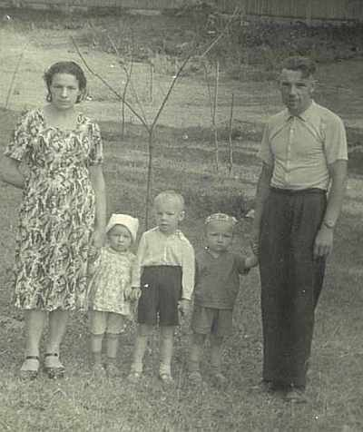
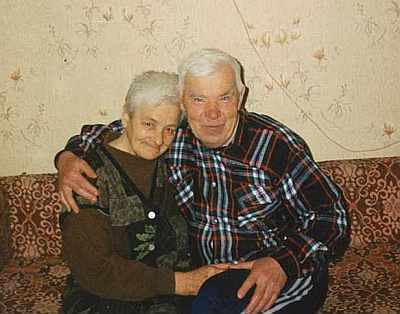

Бахорин Иван АнатольевичРодился 07.04.1936 в д.Горушка, Себежского р-на, Псковской обл., Россия. после службы в Калининграде, по совету друга, переехал жить в г.Щучин Гродненской обл, служил прапорщиком, после чего 12 лет проработал на заводе "Автопровод" в Щучине. Был женат на Сакель Ядвиге Иосифовне. |

 вместе с супругой Ядвигой Иосифовной  с женой и детьми  Щучин 2000г. |
|
Родители:
Братья/Сестры:
Дети:
|